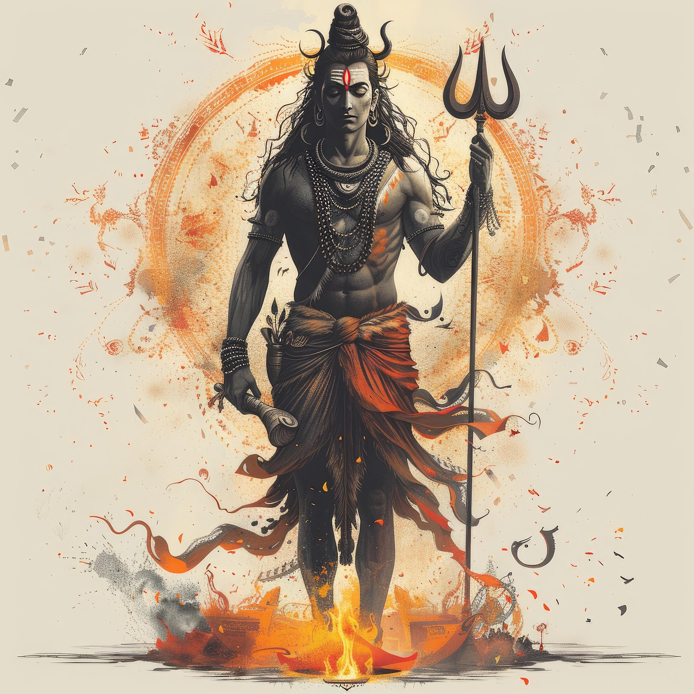

Services Offered


Ganapathi Homam

Bhagavat Seva

Sudarshana Homam

Mrithyunjaya Homam

Thali Pooja (Kerala Wedding Ceremony)
Additional Pooja (Puja) Services
- Laxminarayana Pooja (Puja)
- Umamaheswara Pooja (Puja)
- Saraswathi Pooja (Puja)
- Vastu Bali / Vastu Pooja (Puja)
- Karuga Homam
- Thila Homa
- Agora Homam
- Thali Pooja (Wedding Ceremony)
- And many other traditional Kerala poojas (pujas) and rituals upon request.
Book a Kerala Pooja (Puja)
Please fill the form below to request a Kerala pooja service.